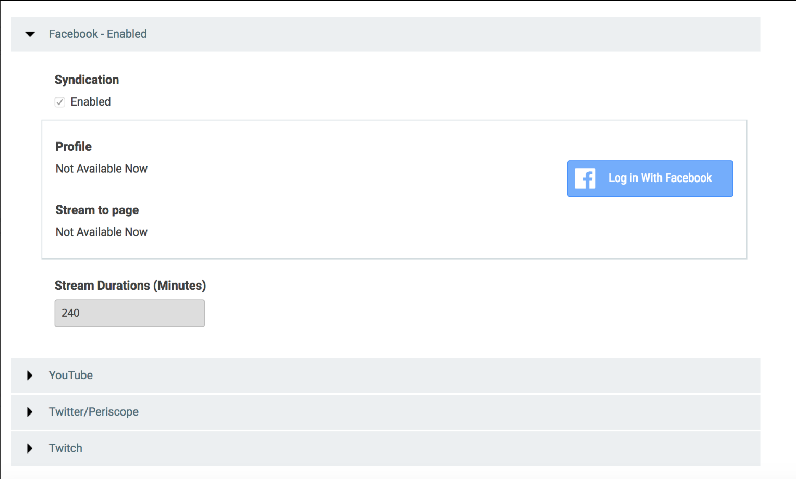

Syndicate live video to Facebook without the need to enable syndication in Ooyala Live.
Before You Start
Here are some considerations about Live Syndication to Facebook:Important:
- Live Syndication only works with the Ooyala Package as the Packaging Partner and Ooyala Encode as the Encoding Partner.
- A channel must be stopped to enable syndication.
- Server Side Ad Insertion (SSAI) is not supported by Ooyala Live syndication to social media.
-
Tip: Once you have enabled Facebook syndication on your channel, you can start and stop the Facebook stream without stopping your channel. This allows you to switch to a different page on Facebook without stoping your channel.
- It's a best practice to log out of all active Facebook session on the browser running Ooyala Live.
Facebook Tab View

Configure Facebook Syndication
-
To start the channel, click START in the upper left of
your browser.
Ooyala Live configures the channel for syndication to all enabled social media. This may take several minutes.
-
Click the play button for Facebook,
 to start syndicating to Facebook.
Important: Before starting Facebook syndication, log out of all active Facebook session on the browser running Ooyala Live.
to start syndicating to Facebook.
Important: Before starting Facebook syndication, log out of all active Facebook session on the browser running Ooyala Live.